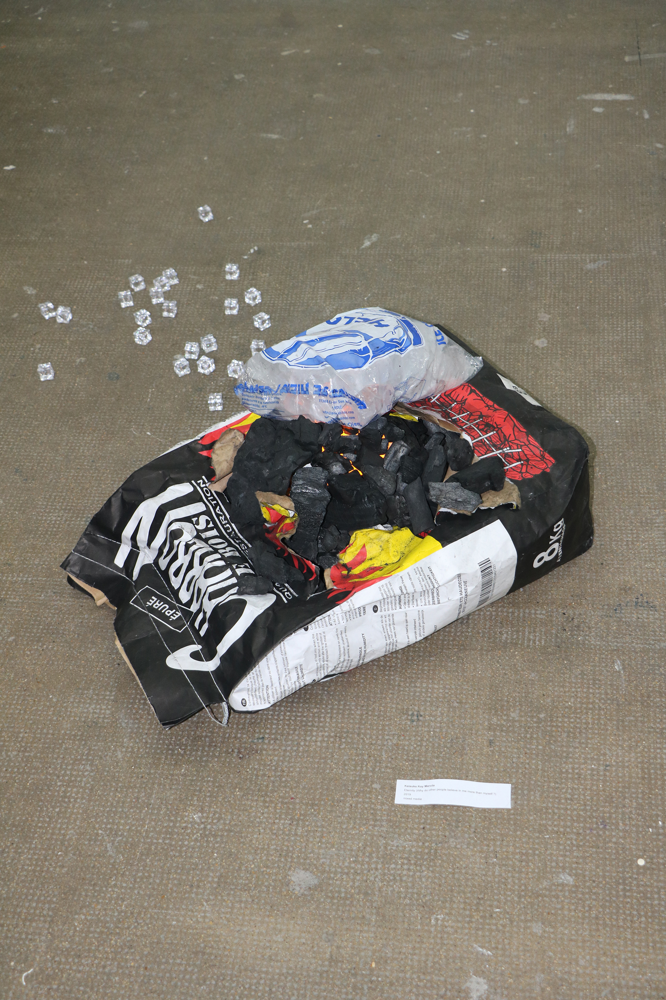
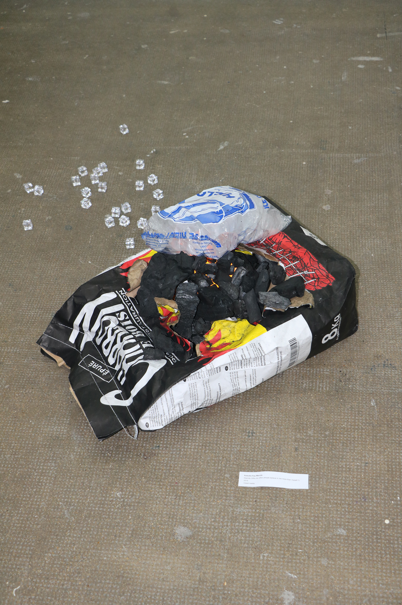

Works
About
Works
About
Monsieur Nabéshima était mon camarade de classe.
Nous sommes restés amis et nous nous connaissons depuis plus de dix ans.
Il est étudiant en économie et aime les sports de combat et le football,
il vit maintenant aux États-Unis.
Il y a longtemps que nous ne nous sommes pas vus, mais nous gardons des contacts réguliers.
Depuis quelques années, je lui raconte souvent mon quotidien.
Il n'était pas particulièrement intéressé par l'art,
mais il a toujours écouté attentivement mon histoire.
Un été, il a commencé à prendre un cours d'art à sa fac.
ll m'a dit :
« J'ai essayé “les beaux-arts” pour comprendre ce que tu faisais.
Peut-être j’ai agi sous ton influence. N'est-ce pas? »
J'ai proposé aux visiteurs de confier leur secret a un mur de l’exposition.
(Text: Confiez vos secret à ce mur.
Remplacez chaque lettre de votre message par un point d’interrogation.)
Ce projet a été présenté à l’occasion de la exposition “Working title” de Jeune Création au Python Paris.
https://www.jeunecreation.org/working-title/

J’ai demandé à plusieurs personnes de me raconter l’histoire d'une de leurs cicatrices et de m'en donner une photographie. Et j’ai créé un tampon de cicatrice d’après cette histoire. vous pouvez lire chaque histoire et vous pouvez essayer d'appliquer le tampon sur le corps réel du mannequin.

 

Ma recette de vaisselle (céramique,2018-)
J’ai reproduit en céramique une partie de la vaisselle de chez mes parents en m’appuyant seulement sur les souvenirs et les images qu’il me restait de l’époque où j’habitais là bas.
Qu’est-ce qu’il y a pour le dîner? (performance,2018)
J’ai appelé ma mère.
On a mangé la même chose en même temps malgré qu’il y ait 8 heures de décalage horaire
entre la France et le Japon.
Dans les restaurants asiatique, ils utilisent souvent une nappe en papier.
Après le repas, ils débarrassent la table en cadence.
Ensuite ils roulent le papier et en étalent un nouveau.
J’ai filmé ce processus et j’ai projeté la vidéo sur une nappe en papier
que j’ai récupéré dans le même restaurant.